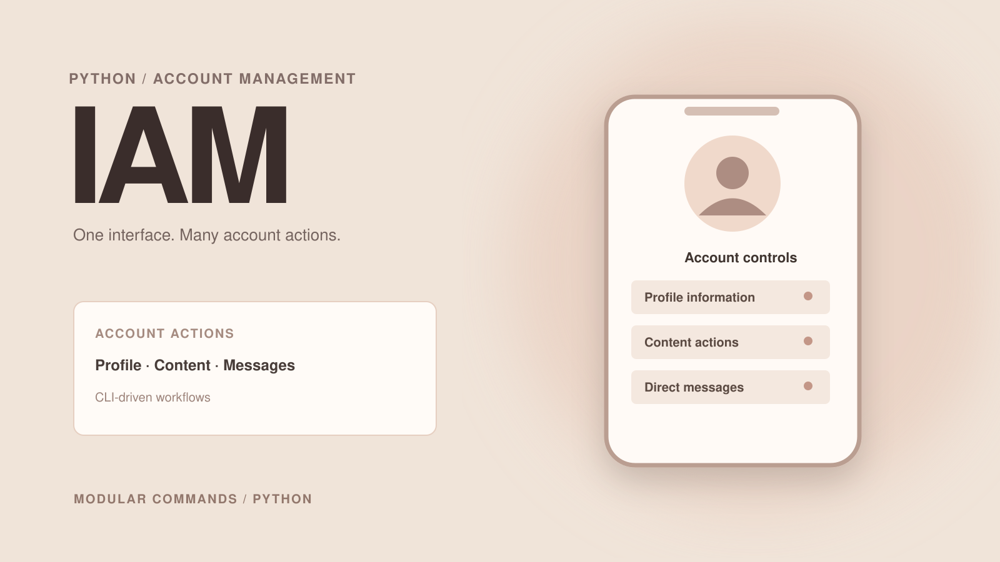

IAM
A Python-based remote Instagram account manager with an extensive menu of account, content, and messaging operations.

Concept artwork created for this portfolio; not a product screenshot or live dashboard.
What it's about.
IAM, short for Instagram Account Manager, is a menu-driven Python script created to consolidate many account operations in one place. Its documented command list spans profile details, content management, messages, account interactions, and account-level settings.
The goal is breadth: bringing numerous repetitive or otherwise separate actions into a single script-driven workflow. The README enumerates 56 actions as well as an exit command.
Made to do more.
Key functions described in the project documentation and portfolio.
Profile and account data
Accesses account information, followers, following, and follow requests.
Content management
Documents actions for posts, stories, highlights, saved content, and uploads.
Messaging and interactions
Includes direct messages, selected media sending, reactions, comments, and follow actions.
Account controls
Exposes operations for profile changes, notifications, blocks, and other settings.
Under the hood.
Technical approach
The README documents Python execution on Linux, Windows, and macOS after dependencies are installed and session information is prepared through cookies.py.
This is a broad set of scripted integrations rather than a polished desktop GUI. The README lists a graphical interface and further automation options among possible future additions.
git clone https://github.com/new92/IAM
cd IAM
python -m pip install -r requirements.txt
python3 cookies.py
python3 IAM.pyConsult the repository README for complete setup instructions, requirements, and platform-specific notes.
Worth noting: The original documentation lists some operations as potentially unreliable. Features depend on external platform behaviour, account permissions, and policy restrictions; test carefully before using them on important accounts.
Project focus
- Python
- Account management
- Automation
- CLI
Find the project
Source code, full documentation, updates and contribution guidelines are available on GitHub.